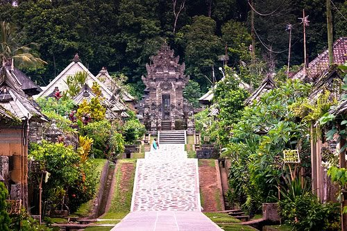

Bali
Bali dikenal dengan julukan Pulau Dewata dan Pulau Seribu Pura. Dewata dalam Pulau Dewata memiliki arti dewa dengan kedudukan yang lebih rendah daripada dewa-dewa utama, dalam hal ini Siwa, Brahma, dan Wisnu. Sedangkan Dewa sendiri dalam ajaran Hindu dan Buddha adalah entitas spiritual yang memiliki kekuatan spiritual untuk mengatur manusia dan alam semesta. Dewata juga bisa berarti bentuk jamak dari Dewa.
|

|
Desa Trunyan | Terunyan atau Trunyan adalah sebuah desa yang berada di kecamatan Kintamani, Kabupaten Bangli, provinsi Bali, Indonesia di dekat Danau Batur. Masyarakat Trunyan mempunyai tradisi pemakaman di mana jenazah dimakamkan di atas batu besar yang memiliki cekungan 7 buah. Adat Desa Terunyan mengatur tata cara menguburkan mayat bagi warganya. Di desa ini ada tiga kuburan (sema) yang diperuntukan bagi tiga jenis kematian yang berbeda. Apabila salah seorang warga Terunyan meninggal secara wajar, mayatnya ditutupi kain putih, diupacarai, kemudian diletakkan tanpa dikubur di bawah pohon besar bernama Taru Menyan, di sebuah lokasi bernama Sema Wayah. Namun, apabila penyebab kematiannya tidak wajar, seperti karena kecelakaan, bunuh diri, atau dibunuh orang, mayatnya akan diletakan di lokasi yang bernama Sema Bantas. Sedangkan untuk mengubur bayi dan anak kecil, atau warga yang sudah dewasa tetapi belum menikah, akan diletakan di Sema Muda (Rumah Miarta Yasa) |
| Area wisata di pulau Bali yang juga berada di pegunungan adalah tempat wisata Kintamani. Ketinggian area Kintamani berada sekitar 1,500 meter dari permukaan air laut, sehingga udara di daerah Kintamani sangat sejuk. Ada banyak lokasi untuk melihat pemandangan pemandangan danau Batur dan pemandangan Gunung Batur. Lokasi favorit melihat pemandangan gunung dan danau Batur berada di desa Penelokan. | Danau & Gunung Batur Kintamani |
  |
  |
Ubud Monkey Forest | Monkey Forest Ubud merupakan wisata yang terbilang unik di kawasan Bali. Seperti namanya, di hutan yang sakral dan memiliki pura ini, terdapat ratusan kera. Setiap hari, kera yang dikeramatkan dan dijaga oleh penduduk lokal ini turun ke tanah dan berinteraksi dengan wisatawan yang datang. Hal utama yang menarik wisatawan datang dan wisata Monkey Forest Ubud adalah berinteraksi dengan kera. Selama ini, kera liar selalu menjauhi manusia dan banyak menghabiskan harinya di atas pohon. Namun, kera di tempat ini justru lebih banyak melakukan interaksi dengan wisatawan yang datang. Selain melakukan interaksi dengan kera, wisatawan juga bisa mengunjungi pura suci di dalam hutan. Ada beberapa bangunan pura di kawasan ini. Pertama, yang dijadikan tempat bermain para kera. Kedua, yang lebih besar dan digunakan sebagai tempat ibadah oleh warga sekitar. Hal terakhir yang bisa dilakukan oleh wisatawan yang mengambil paket wisata ke Monkey Forest Ubud adalah menikmati ketenangan. Saat pagi hari atau menjelang sore, suasana di sini menjadi sangat tenang dan cocok untuk relaksasi. Anda bisa berjalan di tengah hutan melalui jalur yang disediakan oleh pengelola. |
| Salah satu objek wisata yang saat ini sedang trend di Instagram adalah tempat wisata air terjun. Pulau Bali memiliki banyak pilihan objek wisata air terjun terutama pada area bagian utara pulau Bali. Lokasi objek wisata Air Terjun Sekumpul berada di kawasan tempat wisata Bali utara. Daya tarik utama dari objek wisata Air Terjun Sekumpul terdapat pada pemandangan alam sekitar air terjun. Di lokasi air terjun Sekumpul, pengunjung akan melihat dua air terjun kembar saling berdampingan dengan ketinggian sekitar 50 meter. | Air Terjun Sekumpul |
 |